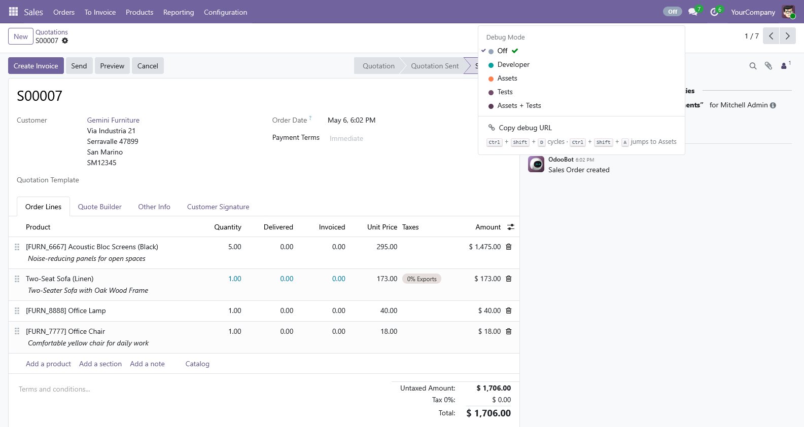
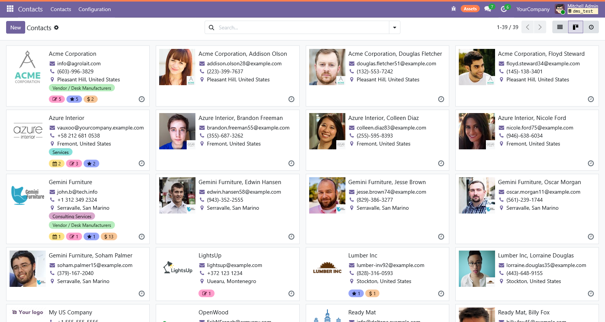
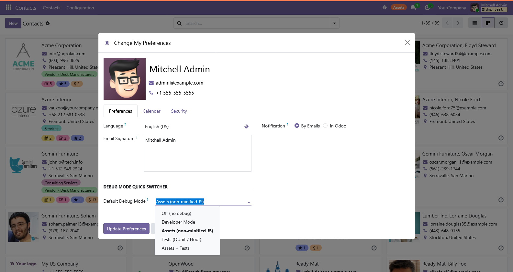
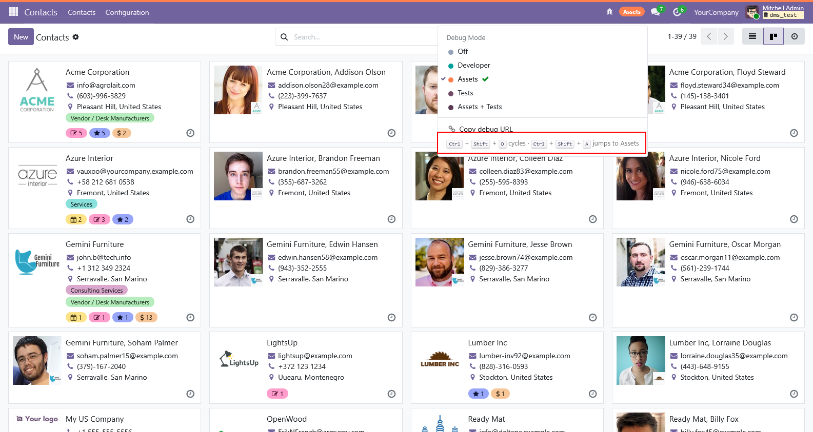

Available in 9 languages
The switcher speaks your team's language. Each user sees mode labels and tooltips in their own Odoo language setting - no extra setup.
Stop typing ?debug=assets in the URL bar.
5 modes, one click · Per-user default · Hotkey · Mobile-ready · Page-edge stripe in heavy modes
Odoo 16 FREE For Devs & Admins 9 LanguagesOdoo's built-in button toggles one mode (?debug=1). Real devs need assets, tests, and assets,tests too — and most type them by hand.
Click URL bar → type ?debug=assets → reload → debug a JS issue. Need tests now? Click URL bar → change to ?debug=tests. Forget you're in heavy mode → pages crawl all afternoon.
Navbar dropdown. Pick a mode. Click. Done. Coloured badge tells you which mode is active. Page-edge stripe in Assets/Tests so you don't forget you're slowing down.
Off, Developer, Assets, Tests, Assets + Tests — every Odoo debug mode in one menu.
Set your preferred starting mode on your user record. Stays in sync whether you switch from this dropdown, My Profile, or Odoo's own debug menu.
Ctrl+Shift+D cycles modes. Ctrl+Shift+A jumps straight to Assets. Both auto-disable while typing.
A 4px coloured bar across the top of the page when you're in Assets or Tests mode. You won't forget you're paying for it.
One-click copy of the current URL with ?debug=... for sharing in tickets and Slack.
Single config parameter hides the switcher and ignores per-user defaults. Recommended ON for production databases.

Five modes, one click. The dropdown shows every mode with a coloured swatch. The current mode has a green check next to it. Click any other to switch.

Heavy mode? You'll know. A subtle coloured stripe across the very top of the page lights up in Assets (orange) and Tests (purple) modes. Doesn't fight Odoo's chrome. Doesn't let you forget either.

Your default, always applied. Set your starting mode on My Profile. The switcher reads it from session_info at boot — no extra RPC, no flashing. Off / Dev / Assets / Tests / Assets+Tests, your call.

Power users live on the keyboard. Hotkeys are registered through Odoo's own hotkey service so you get collision warnings + auto-disable while typing in form fields. The hint is always visible at the bottom of the dropdown.
Switch between assets for breakpoint debugging and tests for QUnit runs without leaving the page. The hotkey is enough on its own.
Need to access "Edit Action" or "Manage Filters" buried under developer mode? One click. Don't need admin rights to use it.
Per-user default means your debug preference follows you across client servers. No more "wait, where's the dev mode toggle on this version?"
Drop the addon, click Install. The bug-icon badge appears in your navbar immediately.
My Profile → pick your usual starting mode. Saved on your user record.
Click the badge or press Ctrl+Shift+D. Page reloads with the new mode. Stripe lights up in heavy modes.
| Action | URL bar | This module |
|---|---|---|
| Toggle developer mode | URL edit + reload | 1 click |
| Switch to Assets mode | Type ?debug=assets | Ctrl+Shift+A |
| See current mode at a glance | Squint at URL | Coloured badge |
| Remember preference across sessions | Browser bookmark | Per-user field |
| Avoid forgetting heavy mode | No signal | Page-edge stripe |
| Share the URL with debug on | Manual copy | "Copy debug URL" button |
| Mobile | URL bar... on a phone? | Same dropdown |
Step 1 — addons path
Drop the module inDownload from the Odoo App Store. Extract to your Odoo addons directory.
Step 2 — install
Install it from AppsThe bug-icon badge appears in the navbar. (Optional) Set your default in My Profile.
The switcher speaks your team's language. Each user sees mode labels and tooltips in their own Odoo language setting - no extra setup.
Odoo's ?debug= param only affects the bundle of the current top-level frame. PDF report rendering and popup iframes don't inherit it — that's an Odoo behaviour, not a module limit, but worth knowing.
?debug=tests loads QUnit test assets. Page loads slow down dramatically. The "disable in production" master switch and the page-edge stripe are both there to prevent accidents.
The default-mode field lives on each user's own record. No global config beyond the kill-switch. No data sent anywhere outside Odoo. Users without admin rights can use the switcher freely — debug mode in Odoo is read-only access to UI affordances, not a privilege escalation.
Reach out via the Odoo App Store contact form — we're happy to help.